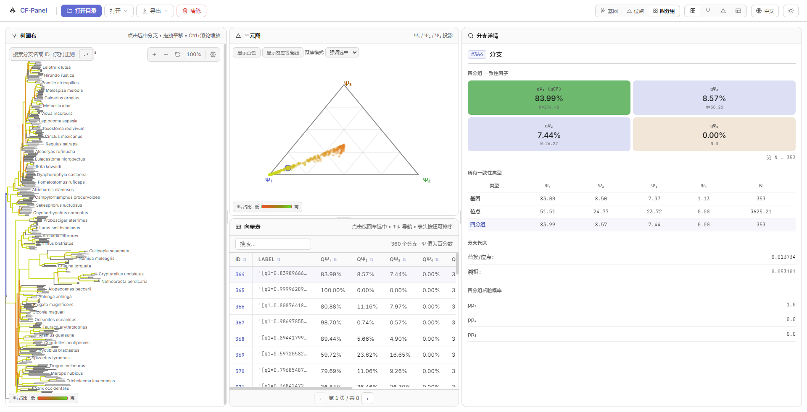
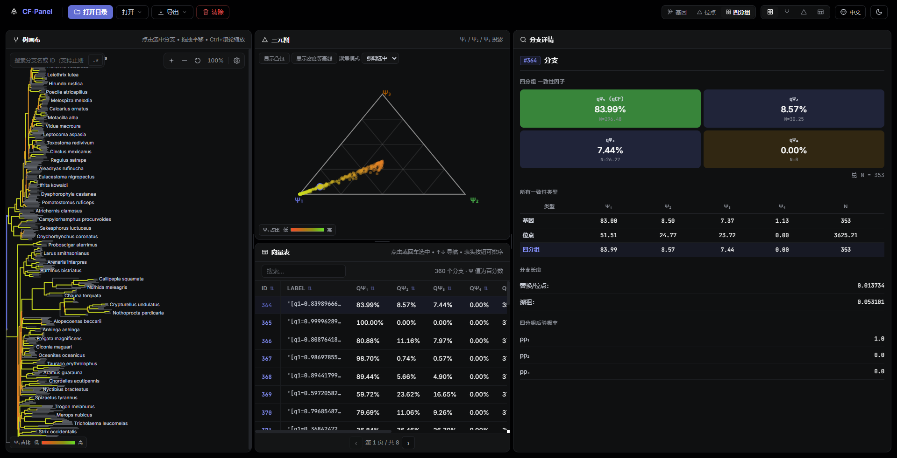

Tree Canvas
Phylogenetic tree with branch-level CF coloring, search, zoom/pan, and multiple layout options.
Phylogenomics · Concordance Factors · Desktop Tool
A cross-platform desktop application for exploring IQ-TREE 2/3 concordance factors with three synchronized, interactive views.
CF-Panel is designed for phylogenomics researchers working with IQ-TREE 2/3 concordance factor (CF) analyses. It parses IQ-TREE output files and provides three synchronized, interactive views — a tree canvas, a ternary plot, and a vector table — enabling researchers to explore gene, site, and quartet concordance through a single, unified interface.
All three views are linked: selecting any branch, point, or row immediately updates the other two. CF-Panel produces 33-column concordance vectors semantically aligned with the concordance_vectors.R R script by Robert Lanfear.

bird_400 dataset
Click any branch, point, or row — and the other two views update in real time. A single selection store coordinates all three panels.
Phylogenetic tree with branch-level CF coloring, search, zoom/pan, and multiple layout options.
Ψ₁/Ψ₂/Ψ₃ projection onto an equilateral triangle, with a Ψ₄ warning indicator for discordant branches.
All 33 concordance vector columns — sortable, searchable, and paginated. Export to CSV at any time.
Tree, ternary plot, and vector table synchronized via a single selection store.
Semantically aligned with Lanfear's concordance_vector.R R script.
Switch between gCF, sCF, and qCF types — all views re-color and re-project.
Detect installed IQ-TREE version and run concordance analysis directly from the app.
CSV for vectors, PNG and SVG for tree and ternary plot.
Linear-inspired design language with WCAG 2.2 contrast compliance.
English and Chinese, with persistent language preference.
Arrow keys to traverse branches, Escape to deselect, roving tabindex throughout.
Built-in bird_400 dataset (363 branches) for instant exploration.
CF-Panel produces 33-column concordance vectors (32 + Label), capturing gene, site, and quartet concordance in a single table.
ID, Label,
gene_psi1, gene_psi2, gene_psi3, gene_psi4,
gene_psi1_N, gene_psi2_N, gene_psi3_N, gene_psi4_N, gene_N,
site_psi1, site_psi2, site_psi3, site_psi4,
site_psi1_N, site_psi2_N, site_psi3_N, site_psi4_N, site_N,
quartet_psi1, quartet_psi2, quartet_psi3, quartet_psi4,
quartet_psi1_N, quartet_psi2_N, quartet_psi3_N, quartet_psi4_N, quartet_N,
quartet_psi1_pp, quartet_psi2_pp, quartet_psi3_pp,
length_subs_per_site, length_coalescent| Ψ | Gene | Site | Quartet |
|---|---|---|---|
| Ψ₁ | gCF | sCF | 100 × q1 |
| Ψ₂ | max(gDF1, gDF2) | max(sDF1, sDF2) | 100 × max(q2, q3) |
| Ψ₃ | min(gDF1, gDF2) | min(sDF1, sDF2) | 100 × min(q2, q3) |
| Ψ₄ | gDFP | 0 | 0 |
| File | Required | Description |
|---|---|---|
gcf.cf.stat | Yes | Gene concordance statistics |
scfl.cf.stat | Yes | Site concordance statistics |
coalescent_bl.cf.stat | No | Coalescent branch length |
gcf.cf.tree | No | Newick tree with CF labels |
gcf.cf.branch | No | Newick tree with branch IDs |
Download a prebuilt binary from the GitHub Releases page, or build from source.
git clone https://github.com/ZengZichao/CF-Panel.git
cd CF-Panel
npm install
npm run dev # Development mode with hot-reload
npm run build # Production build
npm run dist:win # Package for WindowsRequirements: Node.js 18+, npm 9+
--scfl).